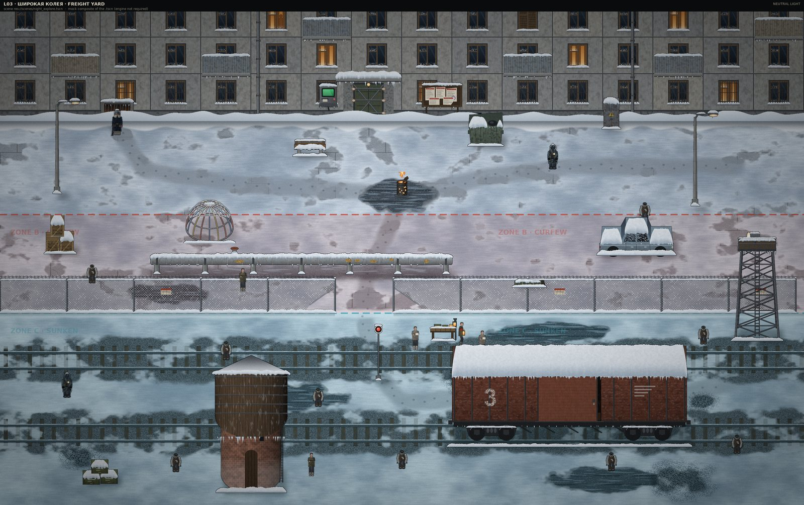
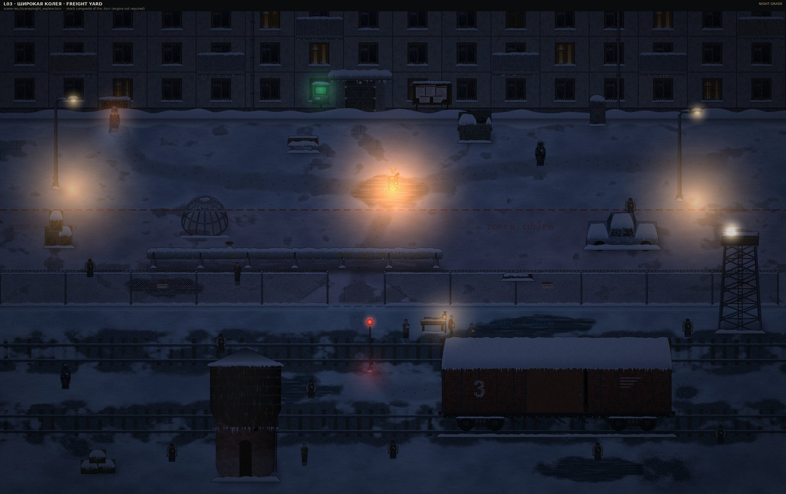
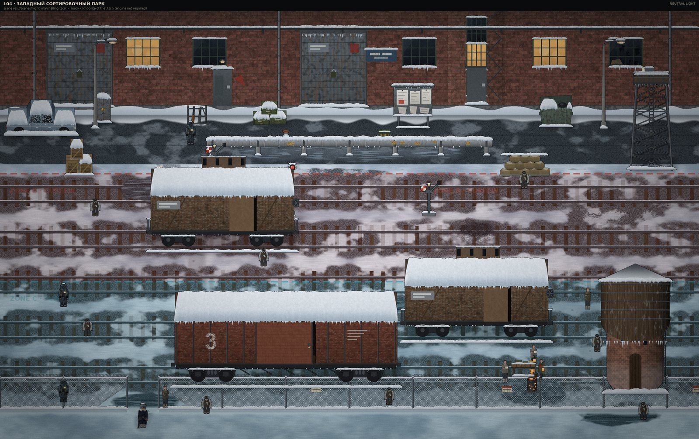
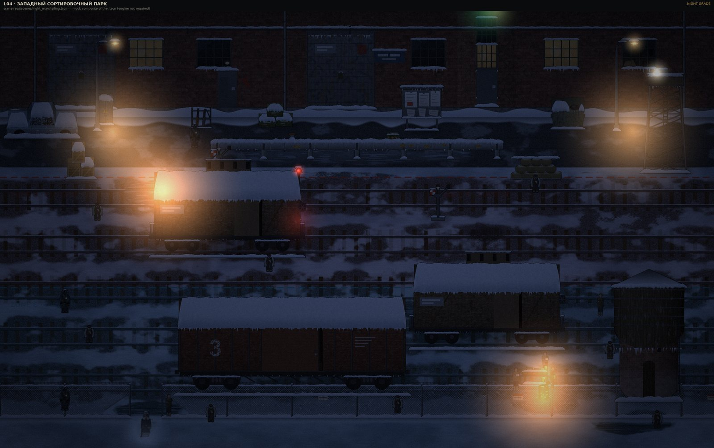
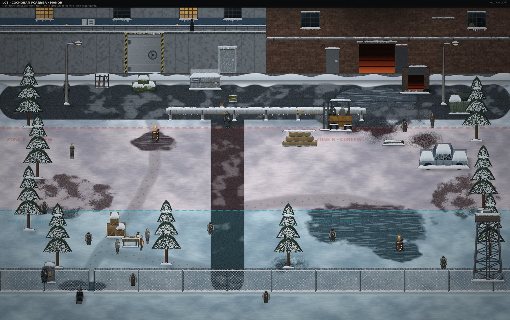
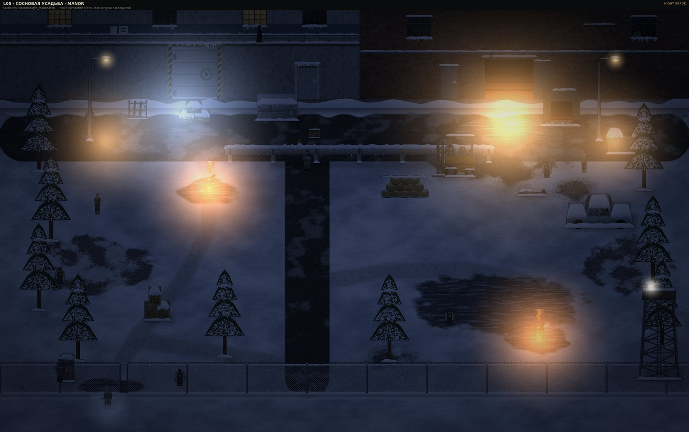
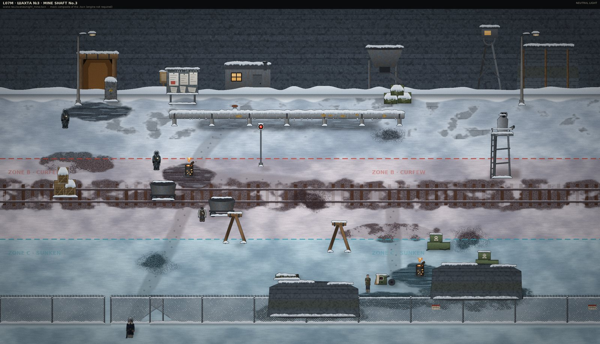
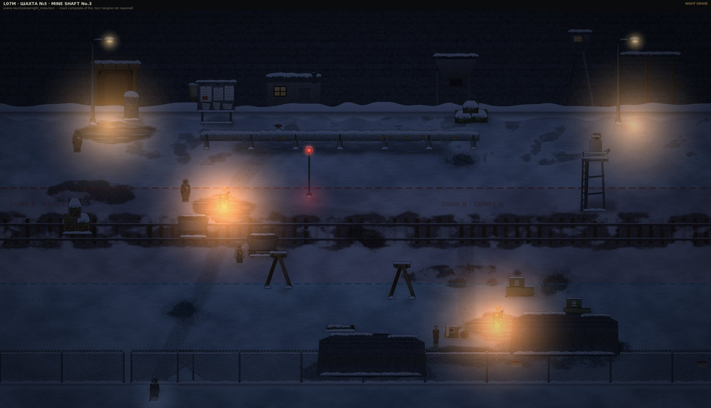

YEAR OF Z · IRON WINTER — ACCEPTANCE SHEETS
验收图 / Acceptance Sheets
10 张图，每张都标了它属于哪个场景。第一张看三区分野与黑市，整关图看美术与摆位，
特写看三件新哨位道具，读数图看战斗手感是否成立。
逐张说明也写在 docs/ui/verify/README.md。
白区 · 安全区ZONE A · WHITE · SAFE
0 丧尸 · 清杀队不进 · 唯一能站定了搜包的地方
红区 · 管制带ZONE B · RED · CURFEW
0~3 丧尸 · 巡逻主力 · 白区居民禁止进入：3.5 s 警告、7 s 盘问
黑区 · 沉降带ZONE C · BLACK · SUNKEN
7~8 丧尸 · 每箱多翻一件 · 黑市与幸存者只在这里
⚠️ 这些不是引擎截图：沙箱里没有 Godot，图片由
tools/art_gen/render_preview.py 直接读 .tscn
复合成画面 —— 位置、层级、夜色、补光、分区色带与游戏一致；shader、粒子、HUD、动画中间帧不在图上。
战斗手感（后坐、命中反馈、音效）与红区警告的实际触发仍然只是静态验证。
在线版 / served: 图片走相对路径，原尺寸 PNG 点图可看。
L03 · ШИРОКАЯ КОЛЕЯ · 宽轨货场
1904×1197

res://scenes/night_explore.tscn
整关 48×40 m · 中性光 · yard_grey.png
- 五层赫鲁晓夫楼立面 + 亮窗、配电箱、告示板、钠路灯、铁网、扳道房、水塔是否连成一条街
- 角色是否踩在雪地上、比例对不对（1 m = 64 px）
- 警戒线 / 铁网 / 轨道三层纵深有没有把画面压平
- 三条色带读不读得出来：白 0–12 / 红 12–21.5（红虚线）/ 黑 21.5–40（青虚线）
- Does the block facade + lit windows + fuse box + notice board + sodium lamps + fence read as one street?
- Are actors standing on snow at the right scale (1 m = 64 px)?
- Do fence / tracks / yard keep three layers of depth?
- Can you read the three bands: white 0-12 / red 12-21.5 (red dashes) / black 21.5-40 (cyan dashes)?
L03 · ШИРОКАЯ КОЛЕЯ · 宽轨货场
1904×1197

res://scenes/night_explore.tscn
整关 · 夜色 · yard_night.png
- CanvasModulate 冷调是否压得住，暗部有没有糊死
- 钠灯黄色光斑半径是否合理，两处油桶火有没有烧掉细节
- 雪面高光是否过曝
- Does the CanvasModulate night grade hold, or do shadows crush?
- Are sodium lamp pools a believable radius, and do braziers blow out detail?
- Is snow highlight clipping?
L04 · ЗАПАДНЫЙ СОРТИРОВОЧНЫЙ ПАРК · 西调车场
1745×1098

res://scenes/night_marshalling.tscn
整关 44×36 m · 中性光 · marshalling_grey.png
- 砖砌调度楼、站台雨棚、驼峰线、四节车皮、水塔的空间关系
- 三件新道具（沙袋 33.0, 9.2 / 弹药箱 24.2, 5.6 / 枪架 12.4, 4.1 m）是否落在车站逻辑位置上
- 站台边缘与轨道是否有可走的通道
- 色带：白 0–9 / 红 9–20 / 黑 20–36；出生点在黑区（涵洞）
- Brick dispatch hall, canopy, hump tracks, boxcars, water tower — do they read in the right order?
- Do the three new props sit where a station would actually keep them?
- Is there a walkable lane along the platform edge?
- Bands: white 0-9 / red 9-20 / black 20-36; spawn is in the black zone (culvert)
L04 · ЗАПАДНЫЙ СОРТИРОВОЧНЫЙ ПАРК · 西调车场
1745×1098

res://scenes/night_marshalling.tscn
整关 · 夜色 · marshalling_night.png
- 站台灯 / 调度楼窗光 / 油桶火三套光源是否互相打架
- 车皮侧面在夜色里还能不能看出体积
- 雪被灯照到的边缘是否过曝
- Do platform lamps, window light and braziers fight each other?
- Can you still read boxcar volume in the dark?
- Do lit snow edges clip?
L05 · СОСНОВАЯ УСАДЬА · 松林庄园
1825×1148

res://scenes/night_manor.tscn
整关 46×38 m · 中性光 · manor_grey.png
- 庄园主楼立面、车库卷帘门（黄黑警示条）、松林、长蒸汽管、庄园铁门
- 这关要比货场「有钱」：砖石 / 铁艺 / 涂装的级差够不够
- 庄园车道那条深色沥青带边缘是否生硬
- 色带：白 0–10 / 红 10–22 / 黑 22–38；黑市在西门内西松林（11.8, 27.4）
- Manor facade, garage roller door (hazard stripes), pine belt, steam pipe, iron gate
- This level must read richer than the freight yard — is the material tiering enough?
- Is the dark driveway edge too hard?
- Bands: white 0-10 / red 10-22 / black 22-38; market sits in the western pines (11.8, 27.4)
L05 · СОСНОВАЯ УСАДЬА · 松林庄园
1825×1148

res://scenes/night_manor.tscn
整关 · 夜色 · manor_night.png
- 最暗的一关：松林会不会把玩家整个吃掉
- 两处火盆是否给出可用的导航锚点
- 瞭望塔探照灯位置与地面光斑
- Darkest level: do the pines swallow the player?
- Do the two braziers work as navigation anchors?
- Watchtower searchlight position vs its ground pool
L07M · ШАХТА №3 · 3 号矿坑
1825×1049

res://scenes/night_mine.tscn
整关 46×34 m · 中性光 · mine_grey.png
- 矿山岩壁立面：斜井坑木门脸 / 工棚 / 矿仓 / 井架 / 爆破断面的次序读不读得出来
- 假人哨塔（38.5, 13.4 m）：远看是哨位、近看是塑料模特 + 猪嘴面具——轮廓必须骗得到人
- 铝热剂堆（33.5 / 37.2 m）与起爆器（29.5, 26.8 m）：作案工具一眼可辨；起爆器旁斜靠爆破台账木夹板
- 色带：白 0–11 / 红 11–21 / 黑 21–34；出生点与目标物都在黑区（本关无探照灯）
- Does the rock facade read in order: timber portal / shack / ore bin / headframe / blast cut?
- Dummy tower (38.5, 13.4): from afar an outpost, up close a mannequin — does the silhouette fool you?
- Thermite (33.5 / 37.2) and detonator (29.5, 26.8): legible tools; the blast ledger leans on the rig
- Bands: white 0-11 / red 11-21 / black 21-34; spawn and objective both sit in the black (no searchlight)
L07M · ШАХТА №3 · 3 号矿坑
1825×1049

res://scenes/night_mine.tscn
整关 · 夜色 · mine_night.png
- 没有探照灯的一关：两盏钠灯 + 两处火堆够不够把黑区照出「可走」的边界
- 孢子断面的暗哑微光（灰绿）：要看得见、又不能像魔法——它是地质微光
- 井架绞车房小窗与斜井洞口暖光是不是全场唯一的「活气」
- The no-searchlight level: two lamps + two fires — is the black zone still navigable?
- The spore face's dull grey-green sheen: visible, but geological — not magical
- Are the headframe cabin window and portal glow the only signs of life?